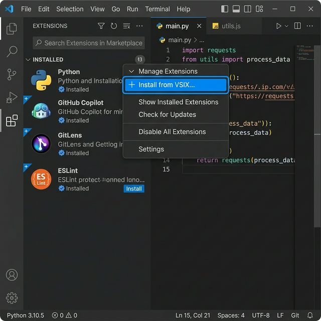
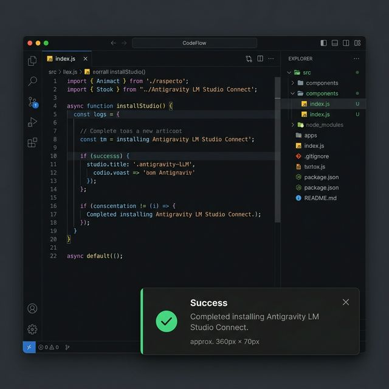

Guide étape par étape pour installer manuellement l'extension Antigravity LM Studio Connect dans votre Visual Studio Code via le paquet VSIX.
Si vous ne trouvez pas le fichier .vsix dans le dossier (par exemple, après avoir téléchargé le code), vous pouvez le créer vous-même. Il suffit d'ouvrir le terminal à la racine du projet et d'exécuter la commande ci-dessous pour installer l'outil officiel de VS Code et empaqueter l'extension :
npm install -g @vscode/vsce && npm install && vsce package
Cela générera un fichier ressemblant à lmstudio-connector-0.0.1.vsix dans le dossier.
Ouvrez Visual Studio Code. Dans la barre latérale gauche, cliquez sur l'icône Extensions ou utilisez le raccourci clavier Ctrl+Shift+X (Windows/Linux) ou Cmd+Shift+X (macOS).
Dans le panneau des Extensions, cliquez sur l'icône des trois points ... (Views and More Actions) située dans le coin supérieur droit du menu latéral et sélectionnez l'option Install from VSIX....

Une fenêtre d'explorateur de fichiers s'ouvrira. Naviguez jusqu'à l'emplacement où vous avez enregistré le fichier d'extension .vsix d'Antigravity LM Studio Connect et sélectionnez-le pour l'installer.
Patientez quelques secondes. Visual Studio Code affichera une notification dans le coin inférieur droit vous informant que l'extension a été installée avec succès. Vous pouvez maintenant commencer à l'utiliser !
